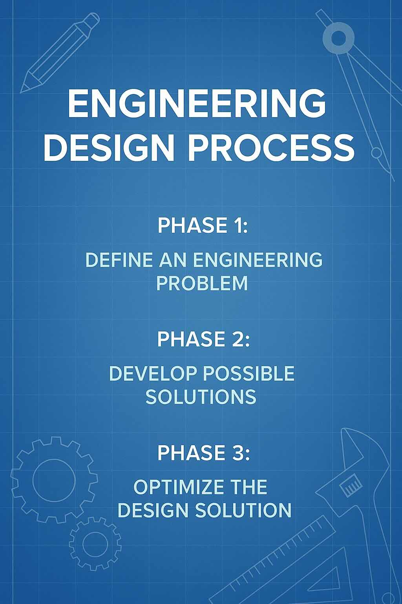
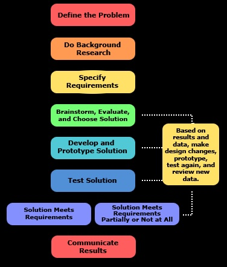
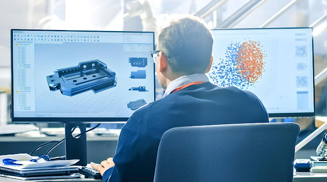

The Engineering Design Process: A Systematic Approach to Problem Solving
Introduction to Engineering Design
Engineering is the application of scientific, mathematical, and design principles to solve real-world problems. Engineers work on countless challenges—from creating faster vehicles to designing medical devices that save lives, from reducing pollution to building more sustainable infrastructure.
At the heart of all engineering work lies a systematic approach called the Engineering Design Process.

The engineering design process is a systematic approach used by engineers to solve problems
Definition: The engineering design process is a series of steps that guides engineers through the creative process of solving problems. While there are many versions of this process—some with as few as six steps and others with as many as 19—they all share three fundamental phases.
The Three Main Phases of Engineering Design
Despite variations in how the process is presented, all engineering design approaches include these three core phases:

The three main phases: Define the Problem, Develop Possible Solutions, and Optimize the Design Solution

A flowchart showing how the engineering design process functions in an iterative manner
Phase 1: Define the Problem
In this initial phase, engineers work to understand exactly what needs to be solved. They identify and clearly articulate:
- The problem statement - A clear description of what needs to be addressed
- Design criteria - The requirements that must be met for a successful solution
- Design constraints - The limitations that any solution must work within

Engineers discussing and defining a problem before beginning the design process
Criteria are the requirements needed for a design to be considered successful. Examples include: must filter 99% of contaminants, must support 500 pounds, must operate for 8 hours on a single charge.
Constraints are the limitations placed on potential solutions. Examples include: must cost under $100 to manufacture, must use recycled materials, must be completed within 3 months, must weigh less than 5 pounds.
Phase 2: Develop Possible Solutions
Once the problem is clearly defined, engineers begin generating ideas for possible solutions. This phase often includes:
- Brainstorming - Generating many ideas without judgment
- Research - Investigating existing solutions and relevant information
- Sketching and diagramming - Creating visual representations of ideas
- Modeling - Developing physical or digital models to test concepts
- Material testing - Evaluating potential materials for the solution
- Expert consultation - Seeking input from specialists or users
Engineers engaged in brainstorming and research activities to develop potential solutions
Phase 3: Optimize the Design Solution
In this final phase, engineers refine their solutions through testing and improvement:
- Building prototypes - Creating working models of the best designs
- Testing and data collection - Evaluating how well prototypes perform
- Data analysis - Examining test results to identify strengths and weaknesses
- Iterative improvements - Making changes based on test results
- Final evaluation - Assessing how well the solution meets criteria and constraints
Engineers testing and optimizing their design solution based on performance data
The Iterative Nature of Engineering Design
A key characteristic of the engineering design process is that it is iterative, not linear. Engineers frequently:
- Move back and forth between phases
- Repeat steps as new information emerges
- Return to earlier phases when challenges arise
- Continually refine their understanding of the problem and potential solutions
Example of Iteration:
An engineer developing a new water filtration system might create a prototype, test it, discover it filters too slowly, return to the brainstorming phase to generate new filter designs, create another prototype, test again, and continue this cycle until the optimal solution is achieved.
Phase 1 Deep Dive: Defining the Problem
The foundation of successful engineering design is a clearly defined problem. Engineers may:
- Be assigned a specific problem to solve
- Identify problems through observation of the natural or designed world
- Recognize opportunities for improvement in existing systems
A well-defined problem statement should include:
- What the solution needs to accomplish (criteria)
- What limitations exist (constraints)
- Who the solution is for (users)
- Why the solution is needed (purpose)
Try It Yourself: Creating a Problem Statement
Choose one of these scenarios and create a detailed problem statement with at least three criteria and three constraints:
- A device to help elderly people pick up objects from the floor
- A system to collect rainwater for garden irrigation
- A method to reduce food waste in school cafeterias
Phase 2 Deep Dive: Developing Possible Solutions
The Power of Brainstorming
Brainstorming is an informal, creative process for generating ideas without judgment. Effective brainstorming:
- Welcomes all ideas, no matter how unusual
- Postpones evaluation until later stages
- Can be done individually or in groups
- Focuses on quantity of ideas first, quality later
- Documents all ideas through sketches, notes, or diagrams
The Role of Research
Research helps engineers build on existing knowledge rather than reinventing the wheel. Research may include:
- Reviewing scientific literature
- Studying existing solutions to similar problems
- Consulting with experts or potential users
- Investigating materials and technologies
- Testing properties of materials or components
Models and Representations
Engineers use various types of models to explore and communicate their ideas:
| Model Type |
Description |
Best Used For |
| Sketches |
Hand-drawn representations with labels and notes |
Quick visualization of concepts |
| Diagrams |
More detailed drawings showing components and connections |
Understanding system relationships |
| Computer-Aided Design (CAD) |
Digital 3D models created with specialized software |
Precise dimensions and movement simulation |
| Physical Models |
Simple 3D representations made from basic materials |
Testing basic form and function |
| Mathematical Models |
Equations representing system behavior |
Predicting performance under various conditions |

An engineer developing a detailed 3D model using computer-aided design (CAD) software
Computer-Aided Design (CAD) has revolutionized engineering by allowing designers to create precise 3D digital models. CAD enables engineers to:
- Visualize complex components and assemblies
- Test how parts move and interact
- Run simulations before building physical prototypes
- Make precise measurements and adjustments
- Share designs digitally with team members
- Generate specifications for manufacturing
Try It Yourself: From Brainstorming to Models
Think about a simple problem: designing a better backpack for students. Create:
- A list of at least 10 ideas during a 5-minute brainstorming session
- A sketch of your favorite design idea with labels indicating key features
- A description of what materials you would use and why
Phase 3 Deep Dive: Optimizing the Design Solution
The Role of Prototypes
A prototype is a preliminary model built to test and demonstrate the functionality of a design solution. Prototypes:
- Transform abstract ideas into tangible objects
- Allow for hands-on testing and evaluation
- Reveal unforeseen problems or limitations
- Provide concrete data for improvement
- Help communicate ideas to stakeholders
Testing and Data Collection
Testing is crucial for optimizing designs. Engineers:
- Develop specific test procedures based on design criteria
- Collect quantitative data (measurements, times, forces, etc.)
- Gather qualitative data (user feedback, observations)
- Document both successes and failures
- Use structured methods to ensure consistent testing
Data Analysis and Design Improvement
Once data is collected, engineers analyze it to guide improvements:
- Identify patterns or trends in test results
- Compare performance against criteria and constraints
- Pinpoint specific components or features needing improvement
- Develop theories about why certain aspects performed as they did
- Prioritize modifications based on impact and feasibility
Making Systematic Modifications
Effective optimization involves making targeted, systematic changes:
- Change one variable at a time when possible
- Document each modification and its effects
- Focus on the most critical performance issues first
- Consider trade-offs between different criteria
- Balance performance improvements against constraints
Example of Optimization:
An engineer developing a solar-powered toy car might collect data on how fast it moves in different lighting conditions. Analysis might reveal it moves too slowly in moderate light. The engineer might then systematically test different solar panel configurations, more efficient motors, or lighter materials to optimize performance while staying within cost constraints.
Try It Yourself: Testing and Optimization Plan
Imagine you've built a prototype of a paper airplane launcher for a science classroom. Create:
- A list of at least 5 specific tests you would perform
- A data collection table showing what measurements you would take
- Three potential modifications you might make based on possible test results
Inside Complex Engineering Designs
Modern engineered products contain numerous components that must work together perfectly. Understanding the internal components and their interactions is essential for effective design.

The complex internal components of a modern drone, showing how multiple systems must work together
When working with complex systems, engineers must:
- Consider how components interface with each other
- Ensure compatibility between different subsystems
- Optimize the overall system, not just individual parts
- Plan for maintenance and repair access
- Consider weight distribution and balance
- Account for heat generation and dissipation
Evaluating Competing Design Solutions
Engineers often develop multiple solutions and must choose the best one. Evaluation involves:
- Comparing test data across different prototypes
- Creating scoring systems based on weighted criteria
- Assessing how well each solution addresses constraints
- Considering which solution offers the best balance of performance
- Evaluating long-term sustainability and maintainability
| Evaluation Method |
Description |
When to Use |
| Decision Matrix |
Grid comparing designs against weighted criteria |
When multiple factors need consideration |
| Cost-Benefit Analysis |
Comparison of costs vs. benefits for each design |
When economic factors are important |
| SWOT Analysis |
Assessment of Strengths, Weaknesses, Opportunities, Threats |
When considering broader implications |
| User Testing |
Gathering feedback from potential users |
When user experience is critical |
When choosing between competing designs, it's important to remember that the "best" solution often involves trade-offs. A design that excels in one criterion might underperform in another. Engineers must prioritize which criteria are most essential for the specific problem context.
Engineering Design in Different Fields
The engineering design process applies across numerous engineering disciplines:
- Mechanical Engineers might design engines, HVAC systems, or manufacturing equipment
- Electrical Engineers might develop circuit boards, power systems, or robotics
- Civil Engineers might create bridges, water systems, or transportation infrastructure
- Chemical Engineers might design processes for manufacturing chemicals or recycling materials
- Biomedical Engineers might develop medical devices, prosthetics, or diagnostic equipment
- Environmental Engineers might create pollution control systems or sustainable energy solutions
Engineering Design Across Disciplines:
Mechanical Engineer: Designing a more fuel-efficient engine by optimizing combustion chamber design and reducing friction
Electrical Engineer: Creating a robotic control system by developing circuits that connect motors to power sources and sensors
Chemical Engineer: Developing a process to safely dissolve plastic waste by testing different solvents and reaction conditions
Check Your Understanding
Question 1:
A student wants to test and improve a prototype for a new solar-powered toy car design. Which sequence of steps would best help optimize the final design?
- Test the prototype in different lighting conditions, record speed data, modify the solar panel position based on results, test again
- Ask classmates which design looks better, build a new prototype based on the most popular opinion
- Research the most expensive materials and replace all components with these materials
- Build multiple prototypes simultaneously with random variations and select the fastest one
Question 2:
When testing a prototype for a new water filtration system, what is the main purpose of recording both successful and unsuccessful test results?
- To have more data points for the final report
- To understand why certain approaches failed and use that information to guide improvements
- To prove that multiple tests were conducted
- To justify the need for more funding
Question 3:
A team of students has created multiple sketches for a wind turbine design. What would be the most effective next step to move from these initial ideas toward an optimal solution?
- Build full-scale versions of all designs immediately
- Choose the most visually appealing design
- Create simple models of the most promising designs to test blade shapes and angles
- Ask a teacher which design is best
Question 4:
A student is designing an energy-efficient cooling system. What type of model would be most useful for testing different component configurations before building a physical prototype?
- A written description
- A computer-aided design (CAD) model with thermal simulation capabilities
- A hand-drawn sketch
- A list of materials
Question 5:
When optimizing the design of a robot arm, how should test data from each iteration be used to improve the next version?
- Data should be analyzed to identify specific performance limitations and guide targeted modifications
- Data should be ignored since each prototype is a fresh start
- Only successful test data should be considered
- Data should only be used to create visually appealing graphs for presentations
Real-World Engineering Design Challenges
Engineers face numerous challenges during the design process:
Balancing Competing Criteria
Often, improving performance in one area means sacrificing in another. For example:
- Making a device more powerful might make it less energy efficient
- Using more durable materials might increase weight and cost
- Adding features might make a product more complex and harder to manufacture
Working Within Tight Constraints
Real-world engineering always involves limitations such as:
- Budget restrictions
- Time deadlines
- Available materials and technologies
- Environmental regulations
- Safety requirements
- Manufacturing capabilities
Anticipating Unintended Consequences
Engineers must consider how their designs might:
- Impact the environment throughout their lifecycle
- Be misused or function in unexpected conditions
- Fail in ways that could cause harm
- Interact with other systems or products
Try It Yourself: Addressing Real-World Challenges
Consider the design of a new electric scooter for urban commuters. For each category below, identify one potential challenge and how you might address it:
- A competing criteria challenge (e.g., speed vs. safety)
- A constraint challenge (e.g., cost limitations)
- A potential unintended consequence
Summary: The Engineering Design Process
The engineering design process is a powerful approach to problem-solving that includes:
- Defining the problem - Clearly articulating the challenge, criteria, and constraints
- Developing possible solutions - Using brainstorming, research, and modeling to generate ideas
- Optimizing the design solution - Testing, collecting data, and making iterative improvements
Key characteristics of the process include:
- It is iterative rather than linear
- It balances creativity with systematic evaluation
- It uses data to drive decision-making
- It considers both criteria and constraints
- It applies across all engineering disciplines
The engineering design process has applications far beyond traditional engineering. Its systematic approach to problem-solving can be applied to challenges in business, education, healthcare, environmental management, and many other fields. At its core, it's about thinking critically and creatively to develop optimal solutions to complex problems.
Final Challenge: Apply Your Knowledge
Imagine you are an engineer tasked with designing a system to reduce food waste in your school cafeteria.
Phase 1: Define the Problem
Create a problem statement that includes:
- Three specific criteria the solution must meet
- Three constraints the solution must work within
Phase 2: Develop Possible Solutions
Outline how you would:
- Approach the brainstorming process
- Research existing solutions
- Create models to test your ideas
Phase 3: Optimize the Design Solution
Describe how you would:
- Test your prototype
- Collect and analyze data
- Make systematic improvements
- Evaluate your final solution against the criteria and constraints